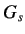
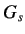

The results presented are obtained for the data file ramp-data-virtual.txt. This data file is present under the Ramp_Test directory for local experiments. The plot thus obtained is reasonably good. See the Scilab console to get the values of  and and  . It is as shown in figure 3.5
The figure 3.4 shows a screen shot of the same. We obtain = 78.92, K = 0.22. The transfer function
obtained here is at the operating point of enterValue percentage of heat. If the experiment is repeated at a different operating point, the transfer function obtained will be different. The gain will correspondingly be more at a higher operating point. This means that the plant is faster at higher temperature. Thus the transfer function of the plant varies with the operating
point. Let the transfer function we obtain in this experiment be denoted as . We obtain . It is as shown in figure 3.5
The figure 3.4 shows a screen shot of the same. We obtain = 78.92, K = 0.22. The transfer function
obtained here is at the operating point of enterValue percentage of heat. If the experiment is repeated at a different operating point, the transfer function obtained will be different. The gain will correspondingly be more at a higher operating point. This means that the plant is faster at higher temperature. Thus the transfer function of the plant varies with the operating
point. Let the transfer function we obtain in this experiment be denoted as . We obtain
|